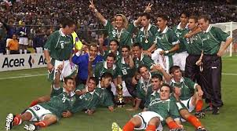
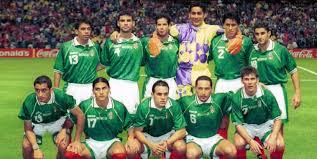

O México conquistou o título da Copa Ouro da CONCACAF de 2003 ao derrotar o Brasil por 1 a 0 na grande final, com um gol de ouro na prorrogação no Estádio Azteca.

A Seleção Mexicana fez uma campanha histórica na Copa América de 2001, sediada na Colômbia, terminando como vice-campeã do torneio

O México chegou à grande decisão após superar o torneio, mas sofreu a virada para os norte-americanos na final.

O Club Necaxa viveu sua era de ouro nesta década sob o comando do técnico Manuel Lapuente, tornando-se o time da década ao dominar o futebol nacional.

Sob a liderança de estrelas como Cuauhtémoc Blanco, a Seleção Mexicana venceu o torneio continental, que foi o pontapé inicial para a consolidação internacional do país.

O maior feito do futebol mexicano na década ocorreu quando a seleção principal derrotou o Brasil por 4 a 3 na grande final, conquistando o título mundial mais importante da história do país.
.jpg)
Logo após o fim da década, o México voltou a levantar um troféu oficial relevante no ciclo olímpico.
.jpg)
O México dominou a década anterior e a posterior, conquistando o Campeonato da CONCACAF em 1977 e abrindo a dinastia da Copa Ouro em 1993.
.jpg)
As quartas de final da Copa do Mundo de 1986, disputada no México, ocorreram nos dias 21 e 22 de junho de 1986

O Campeonato da CONCACAF de 1971, a quinta edição do Campeonato da CONCACAF, foi realizado em Trinidad e Tobago de 20 de novembro a 5 de dezembro.

Os Jogos Pan-Americanos de 1975 foram realizados na Cidade do México, México, entre 12 e 26 de outubro. O evento ficou mundialmente famoso pela marca histórica de João do Pulo no salto triplo e pelo ouro dividido no futebol entre Brasil e México.

O Campeonato da CONCACAF de 1977 foi a 7ª edição do principal torneio de seleções da América do Norte, Central e Caribe, realizado no México entre 8 e 23 de outubro de 1977